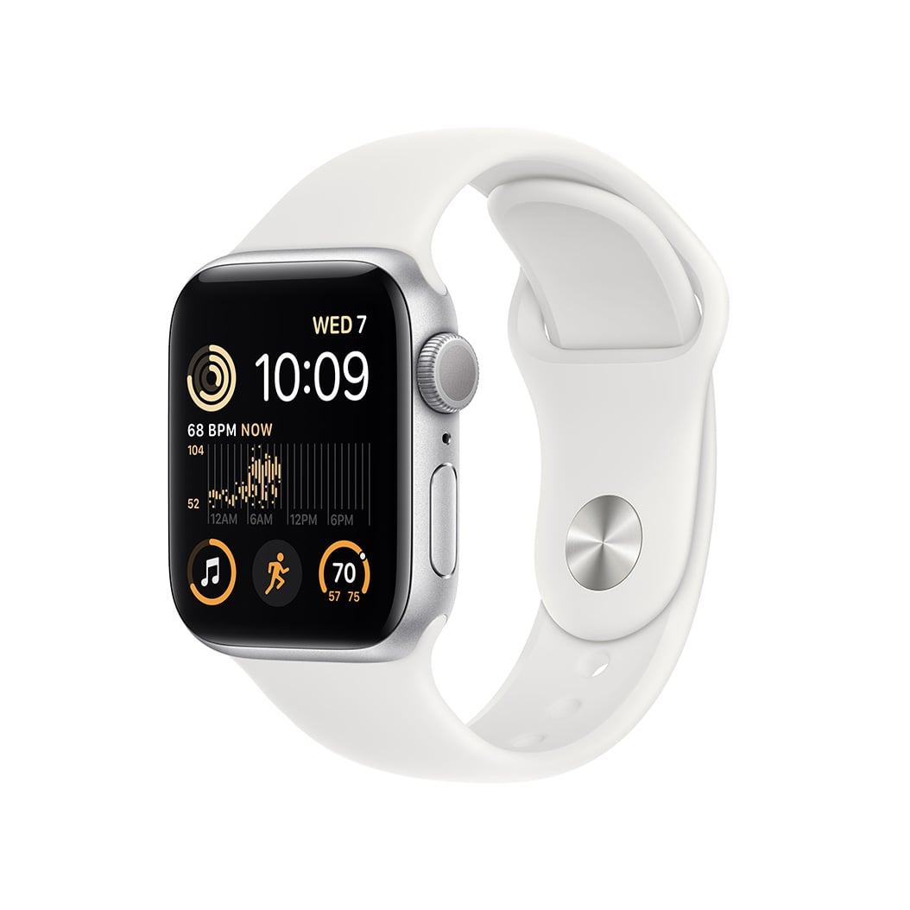
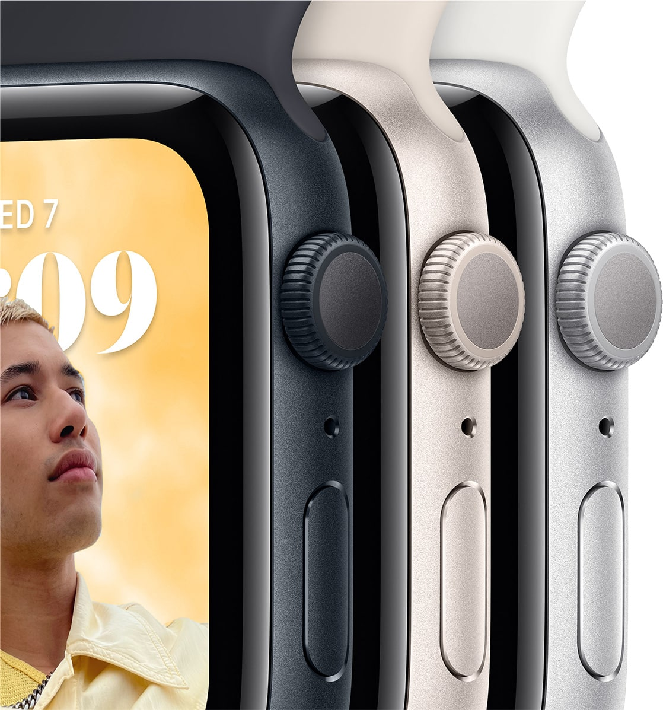
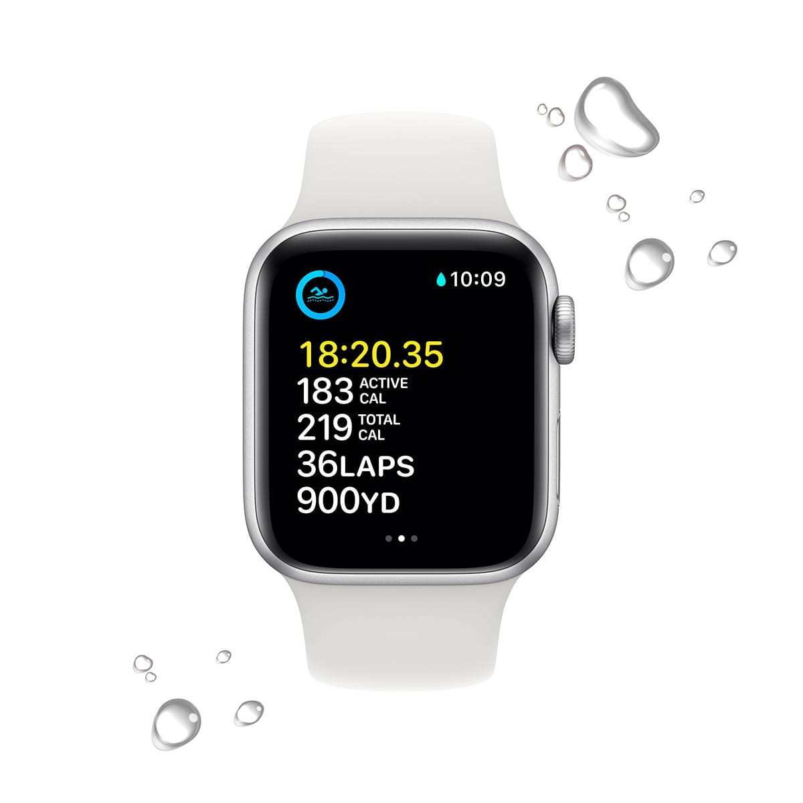
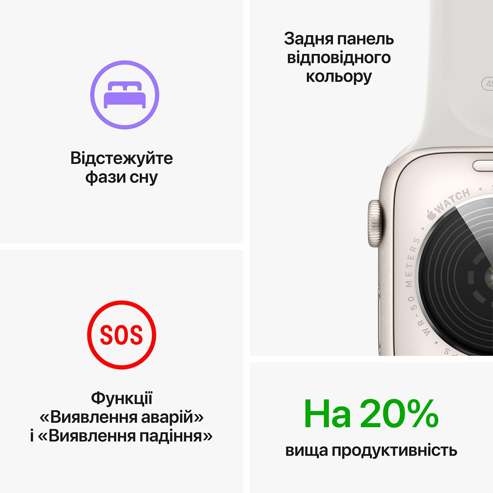
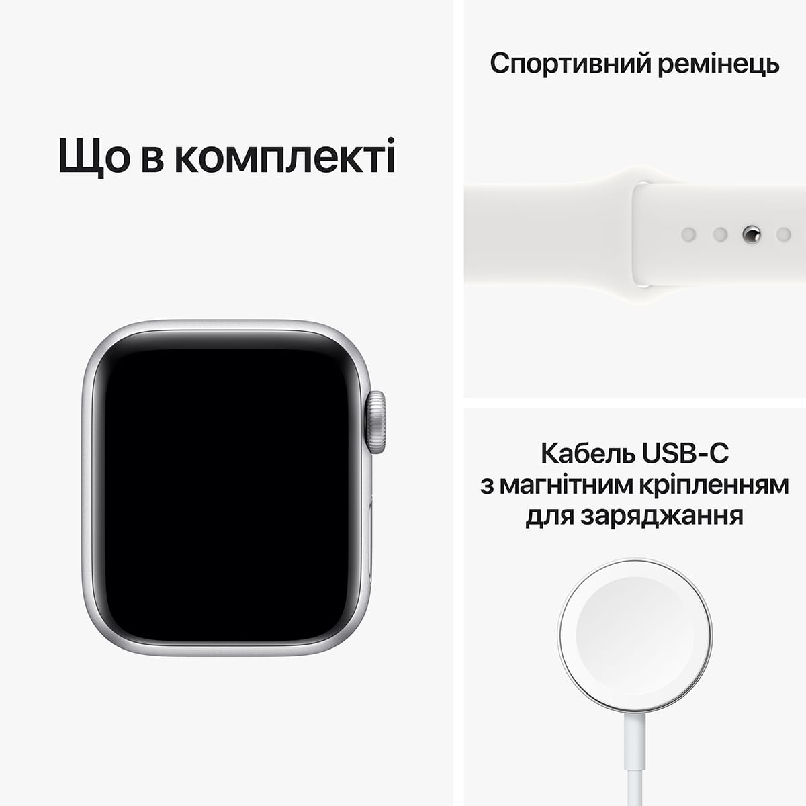

Можна закохатися.
З багатьох причин.

Основні функції для
підтримання здоров’я, безпеки
й активного способу життя.

Захист від води


Основні характеристики
-
Відповідайте на дзвінки
та повідомлення просто
із зап’ястя -
До 20% швидший
за попередній
Apple Watch SE -
Розширені функції безпеки,
зокрема Виявлення падіння,
Сигнал SOS і Виявлення аварій -
Відстежуйте свою активність
протягом дня з Apple Watch,
а потім переглядайте
тенденції в додатку «Фітнес»
на iPhone -
Покращений додаток
«Тренування» з
удосконаленими підходами
до вправ
-
Отримуйте сповіщення
про високий, низький і
порушений серцевий ритм -
Слухайте улюблену музику,
подкасти й аудіокниги
(для використання в моделях
GPS) - Захист від води
-
Відстеження сну дає
змогу дізнатися,
скільки часу ви перебували
у фазах швидкого,
повільного та глибокого сну -
watchOS 9 підтримує
покращений додаток
«Тренування», новий додаток
«Ліки», фази сну та дає змогу
краще відстежувати ритм серця
